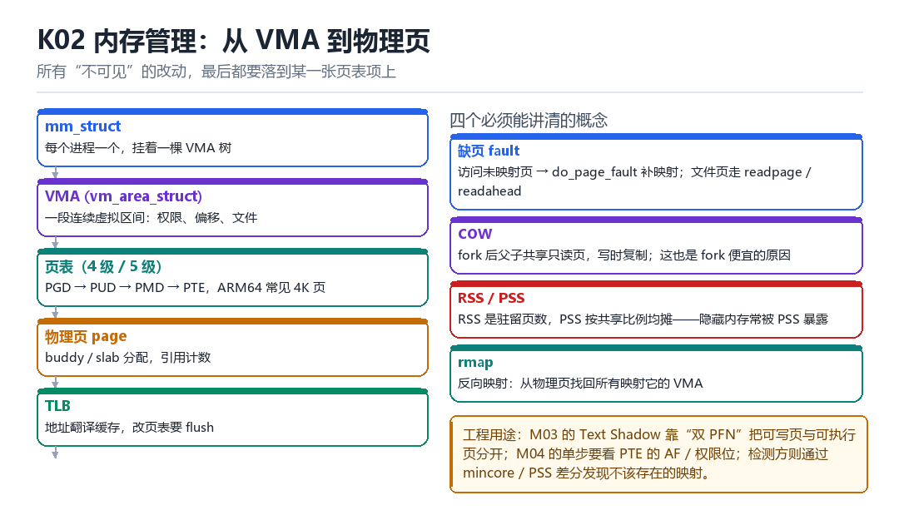

Linux 内存管理
VMA、页表、fault、COW、物理页、分配器、TLB
所有“不可见”的改动，最后都要落到某一张页表项上。
2.1 从 mm_struct 到物理页

- mm_struct：每个进程一个，挂着一棵 VMA 树。
- VMA：一段连续虚拟区间，记录权限、偏移、对应文件。
/proc/self/maps就是它的文本投影。 - 页表：ARM64 常见 4 级（PGD→PUD→PMD→PTE），4K 页；大页会跳过中间层。
- 物理页：由 buddy（大块）与 slab（小对象）分配，带引用计数。
- TLB：地址翻译缓存。改页表必须 flush，否则 CPU 还在用旧翻译。
2.2 四个必须能讲清的概念
| 概念 | 含义 | 工程意义 |
|---|---|---|
| 缺页 fault | 访问未映射页 → do_page_fault 补映射 | hook 内存访问的入口 |
| COW | fork 后共享只读页，写时复制 | fork 便宜的原因 |
| RSS / PSS | 驻留页数 / 按共享比例均摊 | 隐藏内存常被 PSS 暴露 |
| rmap | 从物理页反查映射它的 VMA | Text Shadow 必须维护 |
2.3 为什么 Text Shadow 需要“双 PFN”
代码页是只读且多进程共享的。想改它而不被别人看见，只有一条路：不改原页，改“你看到的页”。具体做法是复制一份物理页，写入跳转，然后只把目标进程页表里的 PFN 换成新页——其他进程的页表还指着原来的页，什么都看不到。
new_page = alloc_page(GFP_KERNEL);
memcpy(page_address(new_page), page_address(old_page), PAGE_SIZE);
patch_jump(page_address(new_page)); // 在副本上写 hook
set_pte_at(mm, addr, ptep, mk_pte(new_page, prot)); // 只换本进程
flush_tlb_range(vma, start, end); // 别忘了刷 TLB2.4 本章自测
- VMA 与页表的关系是什么？
- 为什么改页表必须 flush TLB？
- COW 让 fork 变便宜，代价是什么？
- Text Shadow 除了换 PFN，还要维护哪三样东西？
2.5 深入：ARM64 的四级页表怎么走
虚拟地址被切成四段，每段是一个页表的索引：PGD（bit 39–47）、PUD（30–38）、PMD（21–29）、PTE（12–20），最低 12 位是页内偏移。任何一级的表项无效，就会触发缺页。
| 级别 | 覆盖范围 | 常见大小 |
|---|---|---|
| PGD | 512GB | 4K |
| PUD | 1GB | 4K |
| PMD | 2MB | 4K（或大页） |
| PTE | 4KB | 4K |
2.6 实战：把一个虚拟地址翻译成物理地址
- 读
/proc/self/pagemap，按vaddr / 4096 * 8定位表项。 - 取低 55 位作为 PFN（bit 0–54），乘 4096 加上页内偏移得到物理地址；bit 63 是 present。
- 权限门槛：自 Linux 4.0 起，能否看到真实 PFN 由
CAP_SYS_ADMIN（init user namespace）决定——普通进程连读自己的 pagemap 也只会得到 PFN=0，只能看到 present / soft-dirty 等标志位。
off_t off = (vaddr / 4096) * 8;
uint64_t entry;
pread(fd, &entry, 8, off);
uint64_t pfn = entry & ((1ULL << 55) - 1);
phys = pfn * 4096 + (vaddr & 0xfff);2.7 原理推演：为什么“共享代码页”这么难改
因为代码页被多个进程共享，且被标记为只读 + 可执行。想改它，必须同时满足：找到所有映射它的进程、临时改权限、处理并发执行、改完再恢复。任何一步做错，就是崩溃或暴露。
| 难点 | 原因 | 解法 |
|---|---|---|
| 多进程共享 | 改一处影响全部 | 双 PFN |
| 只读映射 | 写会触发 fault | 改 PTE 权限或换页 |
| 并发执行 | 改的瞬间有人在跑 | 停核或中转 |
Text Shadow 的巧妙之处在于：它不解决“共享”这个问题，而是绕开它——让“共享”继续存在，只是让目标进程看到不同的页。
2.8 数据细节：一个 PTE 的位布局
bit 0 valid
bit 1 table/page 描述符类型
bit 2-4 AttrIndx（内存属性，指向 MAIR）
bit 6 AP[1] PTE_USER：1 = EL0（用户态）可访问
bit 7 AP[2] PTE_RDONLY：1 = 只读
bit 10 AF（Access Flag，0 会触发缺页）
bit 11 nG（非全局，进程切换要刷 TLB）
bit 12-47 输出地址（物理页号 PFN）
bit 53 PXN（特权态不可执行）
bit 54 UXN（用户态不可执行）注意两位的极性相反：AP[1]（bit6）为 1 才是“EL0 可访问”，AP[2]（bit7）为 1 才是“只读”。在 Linux 里它们分别对应 PTE_USER 与 PTE_RDONLY。写代码时把两位搞反，表现就是“要么用户态访问直接 fault，要么改了权限却仍然是只读”。
“双 PFN”改的就是 bit 12–47。改完必须刷 TLB，否则 CPU 还用旧的翻译。
fork 不复制内存；第一次写入才真正分家
盯着一个刚 fork 出来的进程，看它第一次写内存
前零点几微秒风平浪静：父子俩的页表项一模一样，指向同一张物理页，权限都是只读。下一瞬，子进程往一个全局变量里存了个 1——CPU 立刻把这条 store 拦下来，甩给内核一个同步数据异常。这一拍，就是 COW 从承诺变成字节的时刻。
内核里没有谁在提前复制。fork 只做了一件事：把双方的页表项都标成只读，然后记一笔这张页还欠着谁。真正掏钱买新物理页，要一直拖到有人动手写。整个内存管理的戏剧性都在这句话里：先许诺，后兑现。
一次写操作，五拍走完 COW
- CPU 对 页表项 做地址翻译：store 指令查到 PTE 有效但没有写权限 → 结果：触发同步异常，把出错虚拟地址写进
FAR_EL1，原因写进ESR_EL1。 - `do_page_fault` 对 `mm_struct` 查账：拿
FAR_EL1里的地址去 VMA 树里找归属区间 → 结果：确认这次写落在合法的可写 VMA 内；找不到就直接送 SIGSEGV。 - `handle_mm_fault` 对 页表 逐层补齐：PGD、PUD、PMD、PTE，最后走进
wp_page_copy分支 → 结果：判定这是写时复制，不是从磁盘换入。 - `wp_page_copy` 对 物理页 分配新页：从 buddy 拿一页，把旧页原样拷过来，读
page_mapcount判断还有几个人共享 → 结果：只有写者拿到可写的新页，旧页继续留给父进程和其它共享者。 - `set_pte_at` 加 `flush_tlb_range` 对 CPU 的 TLB 收尾：把写者 PTE 的 PFN 换成新页并置可写位，再刷掉旧翻译 → 结果：那条 store 重新执行一遍，这次成功；父进程读到的仍是原来的值。
第 4 拍有个容易漏掉的分支：如果 mapcount 已经等于 1，内核不会分配新页，直接把原 PTE 的可写位打开就返回，这叫复用。所以 COW 的代价不是每次写都复制，而是最后一次写反而免费。这类不需要 I/O 的缺页会记进 /proc/self/stat 的 min_flt 字段。
一段虚拟地址是怎么长成物理页的
- `mmap` 对 `mm_struct` 只画边界：新建一个
vm_area_struct，填好起止地址、flags、后备文件，挂进 maple tree → 结果：一段虚拟区间存在了，但一个物理页都没分配。 - 首次读 对 PTE 触发缺页：若 VMA 是匿名且只读，内核统一映射到全局
ZERO_PAGE→ 结果：读出一串 0，全系统只花一页物理内存。 - 首次写 对 buddy 才真要页：分配匿名页、清零、填 PTE → 结果：
/proc/self/smaps里的Anonymous与Private_Dirty开始上涨。 - 文件映射 对 page cache 借页：把文件
address_space里已有的物理页直接映射进来，标成干净页 → 结果：多个进程映射同一个 so，RSS 各算一遍，PSS 却按映射者数量均摊。 - `exit_mmap` 对 VMA 树 反向清账：逐条摘 VMA、清 PTE、把物理页引用计数减回去 → 结果：页还给 buddy，进程消失后内存统计归零。
| /proc/self/smaps 字段 | 它统计什么 | 隐藏手段为什么会露 |
|---|---|---|
| Rss | 本进程驻留的物理页总数，共享页全算 | 注入一块 so，Rss 直接跳一截 |
| Pss | Rss 按共享者数量均摊后的值 | 与 Rss 的差值泄露了共享关系 |
| Private_Dirty | 只属于本进程且被写脏的页 | COW 写完的页全落这里，改过的代码页最显眼 |
| Shared_Clean | 文件映射且未改写的干净页 | 只读代码页本该全在这里，混进 Private 就反常 |
| Anonymous | 无文件后备的匿名映射 | mmap 出来的跳板与 shellcode 无处可藏 |
| VmFlags | VMA 的 rd、wr、ex、mr、mw 等标志 | 一段 rwxp 匿名区间本身就是强信号 |
把一次 COW 兑现录成数字
# 1. 基准：/proc/self/stat 第 10 字段是 min_flt，第 12 字段是 maj_flt
awk '{print $10, $12}' /proc/self/stat
# 2. 制造一批真正要新页的写（写新文件，不需要先读盘）
dd if=/dev/zero of=/data/local/tmp/cow_probe.bin bs=1M count=32 2>/dev/null
awk '{print $10, $12}' /proc/self/stat
# 3. 看账本：哪些是私有脏页、哪些是共享干净页
grep -E '^(Rss|Pss|Private_Dirty|Private_Clean|Shared_Clean|Anonymous)' /proc/self/smaps | head -24
grep VmFlags /proc/self/smaps | sort | uniq -c | head
# 成功：min_flt 明显增长、maj_flt 不变 => 页是现补的，没走磁盘 I/O
# 失败：maj_flt 同步增长 => 有文件回读或 swap 换入，实验被 I/O 污染，换 tmpfs 重做
# 失败：两个数都不动 => 读的是同一个快照，重新 exec 一条命令再取
# 4. 页表项能否读到真实物理页（需要 CAP_SYS_ADMIN）
dd if=/proc/self/pagemap of=/dev/null bs=8 count=1 2>/dev/null
# 成功：读到 8 字节表项；非 root 时 PFN 位恒为 0，只剩 present 与 soft-dirty 标志
rm -f /data/local/tmp/cow_probe.bin这套实验的真正价值在第 4 条注释：普通 adb shell 没有 CAP_SYS_ADMIN，读自己的 pagemap 也只会拿到 PFN=0。如果拿两个进程各读一次、发现都是 0 就断言它们指向同一物理页，那结论是假的。想验证双 PFN，必须在内核模块里直接走页表，或者以具备该能力的 root 身份读。
把这条结论带走：改一个进程看到的内容，可以不改任何共享物理页，只改它自己的 PTE。第四部 M03 的 Text Shadow 就是把这句话做到极致——复制一份代码页、只换目标进程的 PFN，别的进程页表原封不动；第五部 L09 用 Rss 与 Pss 的差值做结构差分，追的正是这张表里的几列账；第三部 F07 讲 Stalker 把执行流搬进新 slab，同样要回答新页从哪来、旧页谁还指着这两个问题。